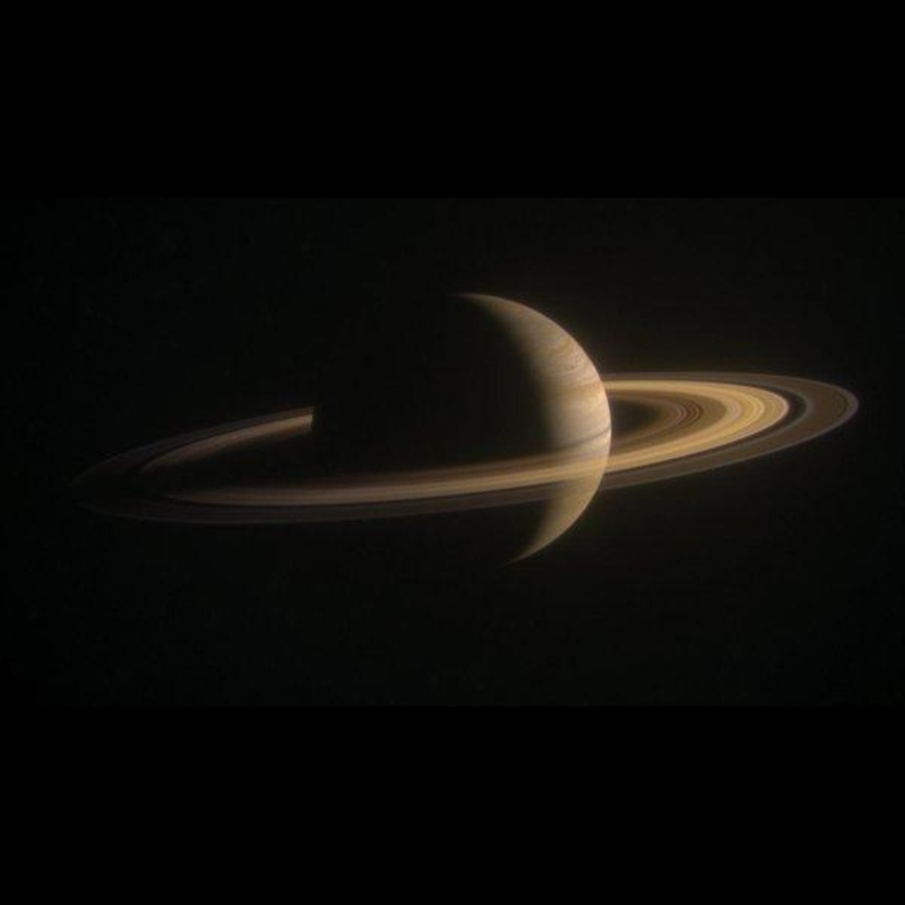

🪐 Saturn
The Jewel of the Solar System
📖 About Saturn
Saturn is the second largest planet in the Solar System and is famous for its stunning ring system, making it one of the most beautiful planets ever observed.
It is a gas giant made mostly of hydrogen and helium, and it is the sixth planet from the Sun.
Its rings are made of ice, rock, and dust particles, forming one of the most spectacular structures in space.
Saturn also has more than 80 moons, including Titan, which has a thick atmosphere and lakes of liquid methane.
🌌 10 Interesting Facts about Saturn
Saturn Facts
1. Saturn is the second largest planet.
2. It is famous for its beautiful rings.
3. Saturn is a gas giant.
4. Its rings are made of ice and dust.
5. Saturn has more than 80 moons.
6. Titan is its largest moon.
7. Saturn is very light in density.
8. It could float in water (theoretically).
9. Saturn has strong winds and storms.
10. It is one of the most beautiful planets in space.
⬅ Back to Solar System